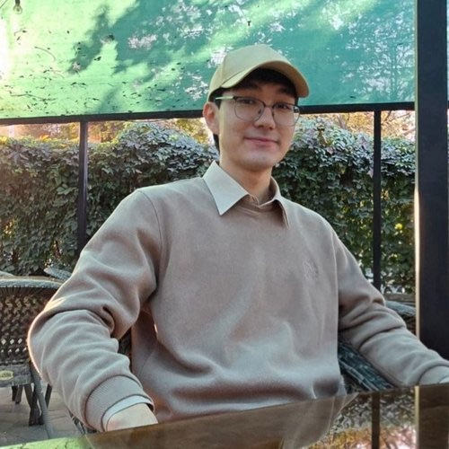

Знаю операционку с обеих сторон стойки: считал маржу в таблицах и закрывал смену своими руками.
3,5 года в кофейнях Ташкента. Начал бариста, год работал операционным менеджером, сейчас руковожу баром. Выстраиваю закупки, учёт, регламенты и обучение так, чтобы они работали без ручного контроля.

Старший бариста, Teplo coffeeдо этого операционный менеджер, Business Book Coffee
За стойкой каждый день решаются те же задачи, что и на уровне всей компании, только цикл короче: ошибка в закупке видна уже вечером, а не в квартальном отчёте.
За стойкойВ масштабе компании
Инвентаризация и товарные остатки→Управление запасами и оборотными деньгами
Food cost и себестоимость напитка→Юнит-экономика и маржа
Заявки на закупку и приёмка товара→Снабжение и работа с поставщиками
Графики смен→Планирование загрузки и фонда оплаты труда
Обучение новичка за две недели→Система найма и адаптации
Стандарты сервиса на смене→Регламенты и контроль качества
Путь
От первой смены до управления процессами
работа за баромуправленческая рольНажмите на отрезок, чтобы увидеть детали
B&B Coffee House
май 2023 — октябрь 2023 · 6 месяцев
Бариста
Чем занимался
Настройка помола, уход за оборудованием и баром
Обслуживание гостей, латте-арт
Оформление витрины и барной стойки
Учёт и качество
Контроль качества и сроков хранения продуктов
Работа в системе iiko
Что забрал в управление: привычку к стандарту. Качество держится на мелочах, которые делаются одинаково каждую смену.
Coffee Nation
октябрь 2023 — сентябрь 2024 · 1 год
Бариста
Продукт
Сорта, регионы происхождения, способы обработки и степени обжарки
Понимание, как каждый параметр меняет вкус в чашке
Альтернативное заваривание
V60
Batch brew
Cold brew и другие методы
Что забрал в управление: глубокое знание продукта. Невозможно считать себестоимость и спорить с поставщиком, не понимая, за что платит гость.
Business Book Coffee
сентябрь 2024 — август 2025 · 1 год
Операционный менеджер
Операционное управление
Организация и контроль операционной деятельности
Разработка и внедрение регламентов
Оптимизация рабочих процессов
Финансы и аналитика
Финансовая отчётность и анализ показателей
Контроль расходов, бюджета и себестоимости
Маржинальный анализ в Excel
Команда
Распределение обязанностей и контроль KPI
Обучение и оценка сотрудников
Договоры и поставщики
Переговоры и заключение договоров
Контроль исполнения обязательств
Документальное сопровождение
Что забрал в управление: взгляд на кофейню как на бизнес: деньги, договоры, регламенты и люди в одной системе.
Teplo coffee
август 2025 — настоящее время
Старший бариста
Управление баром
Организация работы бара и барной команды
Графики смен
Обучение, адаптация, стандарты сервиса
Финансы
Расчёт food cost и себестоимости напитков
Контроль списаний и потерь
Анализ маржинальности, бюджет бара
Склад и закупки
Инвентаризация и товарные остатки
Заявки, приёмка, работа с поставщиками
Сроки годности и условия хранения
Что забрал в управление: проверку своих же регламентов на практике. Здесь я внедряю процессы и сам вижу, как они работают на смене.
Результаты
Что уже выстроено в Teplo coffee
до 1 %
норматив инвентаризационных потерь в баре
2 недели
план обучения для сотрудников без опыта
План закупокМеньше стоп-листов и неликвидных остатков на складе.
Система контроля товарных остатковОстатки видны до того, как позиция закончилась.
Инвентаризация с меньшим числом ошибокЕдиный порядок подсчёта и сверки.
Контроль себестоимости напитковFood cost считается по каждой позиции меню.
Обучение и адаптацияНовички проходят одинаковую программу, а не учатся у того, кто оказался рядом.
Сколько стоят потери: посчитайте на своих цифрах
Остаётся в компании при нормативе 1 %4 млн сум в месяц48 млн сум в год
Это калькулятор для примера, а не данные о вашей компании. Формула: закупки × (текущие потери − 1 %).
Что внедрю
Шесть практик, которые я принесу с собой
Каждую из них я уже делал своими руками. В новой компании начну с тех, где потери заметнее всего.
Закупки по плану, а не по ощущениям
Опыт: план закупок в Teplo coffee
Проблема
Ходовая позиция уходит в стоп-лист, а рядом лежит товар, который не продаётся и скоро спишется.
Что сделаю
Минимальный остаток по каждой ключевой позиции, график заказов под поставщиков, отдельный разбор неликвида раз в месяц.
Как поймём, что работает
Число стоп-листов в неделю, доля неликвида в остатках, оборачиваемость склада.
Инвентаризация как ритм, а не как аврал
Опыт: норматив потерь до 1 %
Проблема
Недостачу находят раз в месяц, когда причину уже не восстановить.
Что сделаю
Короткие еженедельные пересчёты по самым дорогим позициям, полная инвентаризация по графику, разбор каждого отклонения с ответственным.
Как поймём, что работает
Процент потерь к обороту, число расхождений между учётной системой и фактом.
Себестоимость и маржа по каждой позиции
Опыт: food cost и маржинальный анализ
Проблема
Цены поставщиков растут, а технологические карты и цены в меню остаются прежними. Маржа уходит незаметно.
Что сделаю
Актуальные техкарты, пересчёт себестоимости при каждом изменении закупочной цены, матрица ассортимента: маржа против продаж.
Как поймём, что работает
Food cost в процентах от выручки, маржа по категориям, доля убыточных позиций.
Ввод нового сотрудника за две недели
Опыт: программа обучения с нуля
Проблема
Каждого новичка учат по-своему, поэтому качество зависит от того, кто сегодня на смене.
Что сделаю
Программа по дням, чек-листы навыков, наставник, аттестация в конце. Одна и та же для всех точек и подразделений.
Как поймём, что работает
Срок выхода на самостоятельную смену, текучесть в первые три месяца, результаты аттестации.
Регламенты, которые выполняются
Опыт: регламенты в Business Book Coffee
Проблема
Правила существуют в головах или в папке, которую никто не открывает.
Что сделаю
Короткие чек-листы на открытие, закрытие, приёмку и списания. Проверка исполнения встроена в рабочий день руководителя.
Как поймём, что работает
Доля выполненных чек-листов, число повторяющихся ошибок, время на открытие и закрытие смены.
Недельный отчёт на одной странице
Опыт: финансовая отчётность и Excel
Проблема
Собственник узнаёт о проблеме из итогов месяца, когда деньги уже потеряны.
Что сделаю
Один лист раз в неделю: выручка, себестоимость, списания, фонд оплаты труда, отклонения от плана и решения по ним.
Как поймём, что работает
Отчёт приходит в один и тот же день, по каждому отклонению есть решение и ответственный.
Это рабочие гипотезы. Целевые цифры по каждой назову после того, как увижу реальные данные компании.
Первые 90 дней
С чего я начну, когда выйду на работу
Понять, как компания работает на самом деле и где она теряет деньги и время.
Прохожу каждый ключевой процесс лично, от закупки до клиента. Работаю смены рядом с командой.